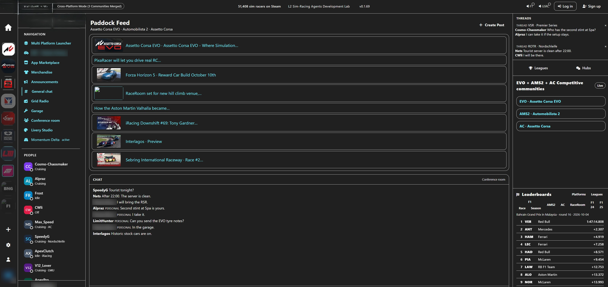
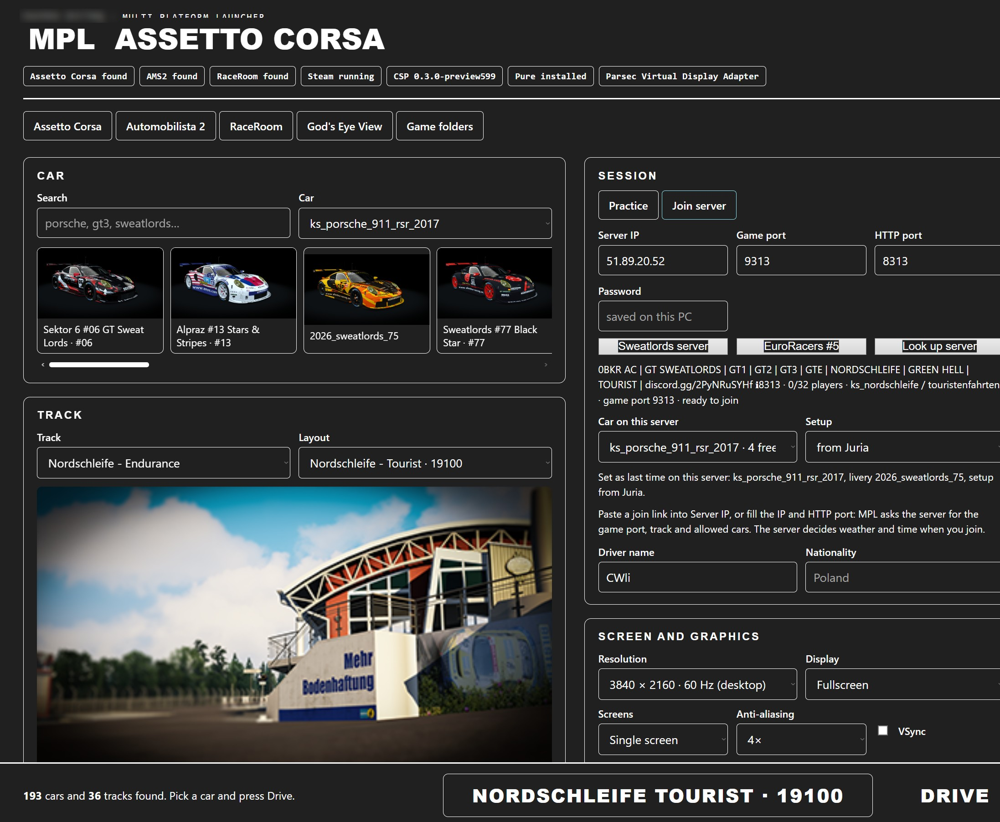
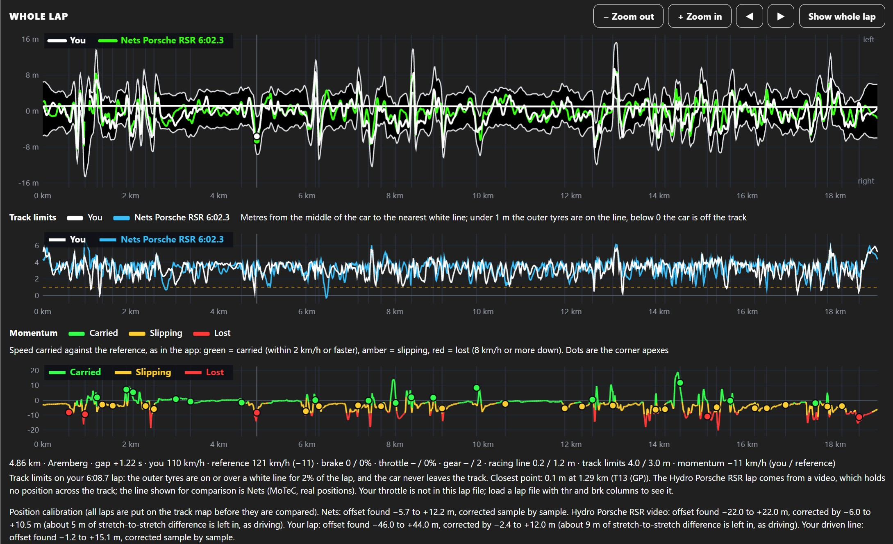
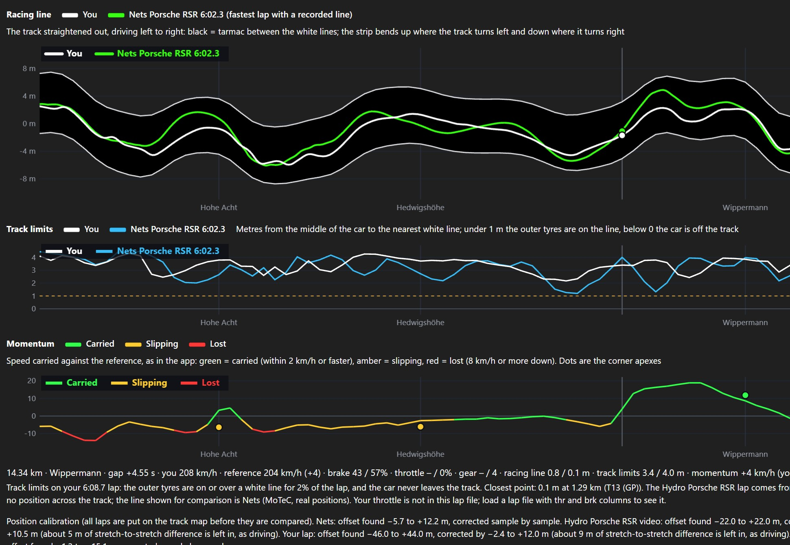
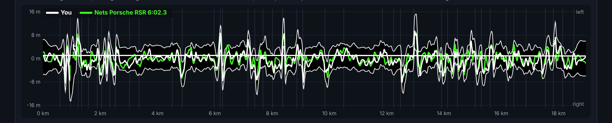
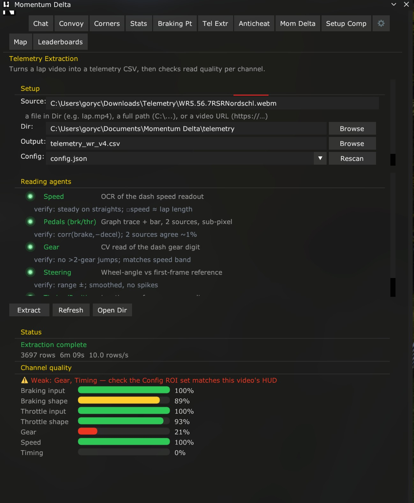
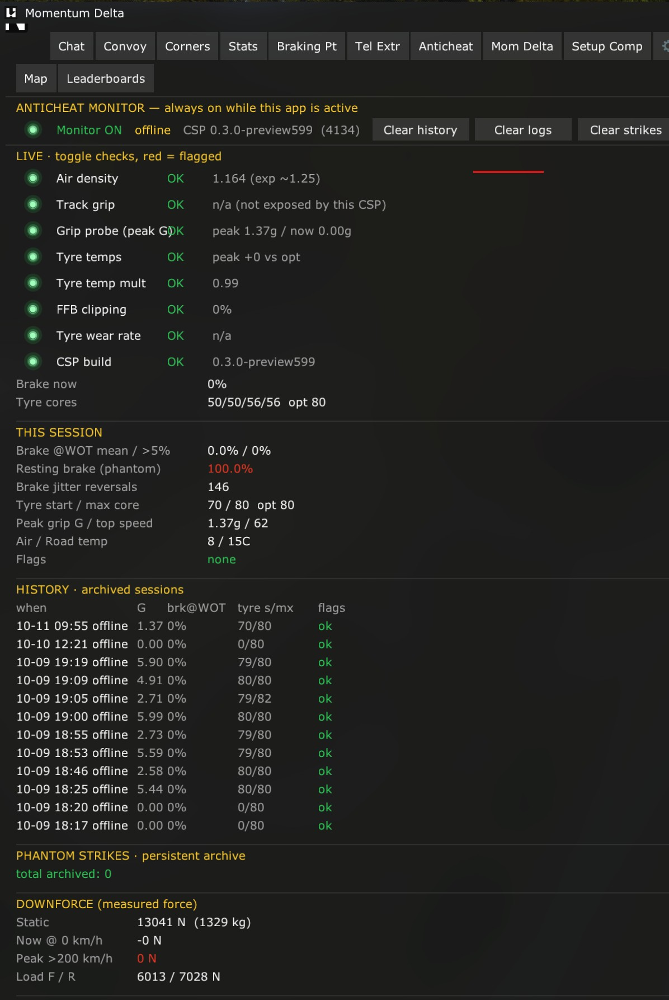
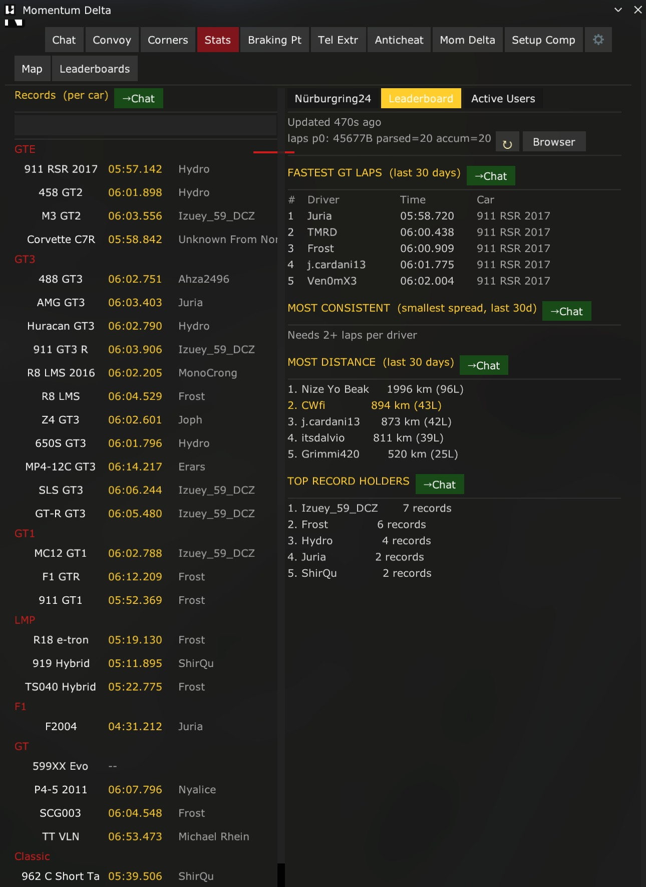
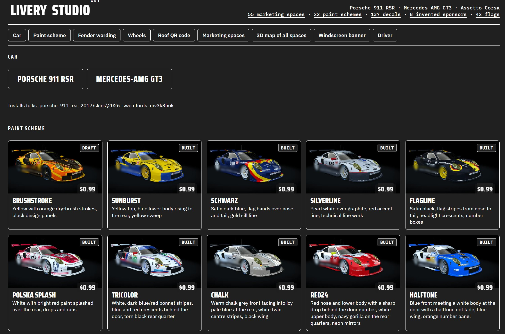
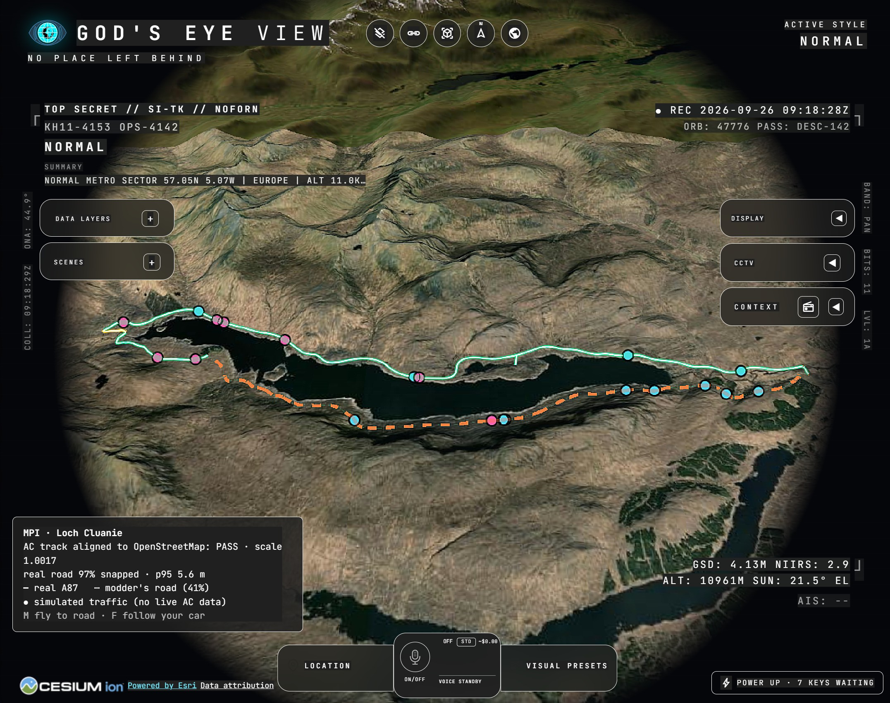

FOR THE SIM-RACING COMMUNITY
The next-generation sim-racing platform: streamline your racing life, supercharge performance with AI coaching, and empower communities with real-world monetization.
Lukasz Gorycki · gorycki.lukasz@gmail.com
© 2026 Lukasz Gorycki. All rights reserved.
WHY NOW
01
As ACC's peak passes, grids thin out and players scatter.
02
No recurring model drivers happily pay for.
03
A dozen launchers, apps and Discords; liveries never sync.
04
iRating is the only recognised skill measure, inside one sim.
L2 Sim-Racing Platform · © 2026 Lukasz Gorycki · 02

1 · OPEN PLATFORM
1
2
3
4
5
6
7
8
9
10
The portal home in cross-platform mode, three communities merged · © 2026 Lukasz Gorycki · 03
1 Platform bar · AC, EVO, AMS2, iRacing, RaceRoom, LMU, BeamNG and F1 in one switcher
6 Threads · team and league conversations, e.g. who takes the second stint at Spa
2 Cross-platform mode · three sim communities merged into one view
7 Live communities · EVO, AMS2 and AC competitive hubs side by side
3 Navigation · launcher, app marketplace, merchandise, Grid Radio, Garage, Livery Studio, Momentum Delta
8 Leaderboards · F1 race and season, AMS2, AC, RaceRoom, F1 24 and F1 25
4 Paddock feed · news from every sim in one stream, with a post button for the community
9 People · who is online, cruising or idle, and in which sim or track
5 Live Steam count · sim racers playing on Steam right now, across titles
10 Chat · general chat and a conference room, private messages marked personal
Universal web experience: manage your racing schedule, servers and sessions from a fast, customizable web interface.
L2 Sim-Racing Platform · © 2026 Lukasz Gorycki · 04

1 · OPEN PLATFORM
One web launcher instead of a dozen game-specific ones.
Finds your sims · Assetto Corsa, AMS2 and RaceRoom, plus Steam, CSP and Pure, checked on start
Car, livery, track · search the whole library, pick a livery from its preview, press Drive
Join any server · paste a join link; MPL reads the game port, track, allowed cars and free seats
Remembers each server · last car, livery, setup, driver name and password are set for you
No file-syncing friction · liveries and setups are in place before you join
MPL for Assetto Corsa, joining a Nordschleife Touristenfahrten server · © 2026 Lukasz Gorycki · 05
1 · OPEN PLATFORM
The model has massive precedents outside racing: CurseForge and Nexus Mods, central hubs where creators monetize assets, code and mods for a percentage split.
Apps, integrations and race-ops agents built by the community.
Layer-2 autonomous sim-racing tech, open to every developer.
Transparent splits over an Optimism L2 crypto/fiat bridge.
Creators keep ownership; files sync without friction.
L2 Sim-Racing Platform · © 2026 Lukasz Gorycki · 06
1 · OPEN TELEMETRY SOURCE
The template is proven: OP.GG, DotaBuff, Racelab, TrackTitan. We reproduce it with far higher-class data for the Nordschleife, open to all, not locked in closed repositories.
Laps from players, servers and fast drivers' videos
Each tuned to one part of racecraft
Share, copy and auto-promote improvement
The server receives free data.
The player receives recognition and a status change, with a clear threshold for skill monetization: a strong churn moderator.
L2 Sim-Racing Platform · © 2026 Lukasz Gorycki · 07

2 · MOMENTUM DELTA
Stop guessing where you are losing time. Multiple visual technologies in one performance briefing.
Corner-to-corner commentary, comparisons against your previous bests, and overlays against teammates or record holders.
Focused on momentum delta and slow-corner mastery: speed carried, slipping or lost.
Whole-lap view · own lap 6:08.7 against Nets, Porsche RSR 6:02.3 (MoTeC) · © 2026 Lukasz Gorycki · 08

2 · MOMENTUM DELTA

Black is the tarmac between the white lines. The strip bends up where the track turns left and down where it turns right.
Hohe Acht to Wippermann: your line in white against the reference in green, metre by metre, with track limits and momentum on the same distance axis.
Every lap is calibrated onto the track map before it is compared.
A new way to read a racing line · pick a corner or use Zoom in · © 2026 Lukasz Gorycki · 09
Brake point, pressure, entry and apex speed per corner, posted to chat with a clip.
Pick a corner on the map, teleport to it, and the reference braking line is painted on the track.
Screen recordings from the in-game app, Assetto Corsa · © 2026 Lukasz Gorycki · 10


2 · MOMENTUM DELTA
Turns a lap video into a telemetry file. Reading agents for speed, pedals, gear and steering, each checked, with a quality score per channel.
Always on while the app runs: air density, grip, tyre temperatures, FFB clipping, phantom brake and downforce, archived per session.
Fast laps that exist only as videos become reference laps for everyone.
In-game tabs: Tel Extr and Anticheat · © 2026 Lukasz Gorycki · 11

3 · SUB 6
$0.99
Subscriptions start at $0.99. Players don't just want to play; they want to prove they are improving.
Corner-to-corner commentary and overlays against record holders.
Pass a clear threshold and start earning: fast drivers coach, mentor and sell laps.
The AI handles the data; people teach, race and build community together.
Skill monetization and subscription model · in-game Stats tab, right · © 2026 Lukasz Gorycki · 12

4 · LIVERY STUDIO
Create stunning designs in the browser, without the hassle.
Ready schemes · paint schemes from $0.99, built and installed straight into the game
Full control · paint, fender wording, wheels, roof QR code, windscreen banner, driver
Marketing spaces · every sponsor space mapped on the car in 3D
Clean by design · invented sponsors and flags, no copyrighted real-world logos
Porsche 911 RSR and Mercedes-AMG GT3 for Assetto Corsa today · © 2026 Lukasz Gorycki · 13
4 · LIVERY STUDIO
The team designs once, with fully customizable layers.
driver name · flag · number
decals · sponsors · colours
AC · EVO · AMS2
RaceRoom · iRacing
Alternative distribution: a league ships one master template and a small slot file per driver, not one heavy skin per car per sim. MPL puts the right livery in place when the driver joins.
L2 Sim-Racing Platform · © 2026 Lukasz Gorycki · 14
5 · OPEN DRIVER SCORE
| iRating | Open Driver Score | |
|---|---|---|
| Formula | Owned by one company | Open format, managed by the community |
| Platforms | One sim | Every sim, one score |
| Changes | Decided by the owner | Open voting system |
| Leagues | Inside its own service | Hybrid league: real and virtual merged |
DAO governance: community-voted moderation and server funding instead of corporate-controlled forums. Open voting and transparent value-sharing build lasting loyalty.
L2 Sim-Racing Platform · © 2026 Lukasz Gorycki · 15
L2 Sim-Racing Platform · © 2026 Lukasz Gorycki · 16
6 · GRID RADIO
Sim-racing media usually covers only the podium finishers. Grid Radio changes the script: opportunities to monetize skill, upcoming talent, and promotion for drivers, teams, leagues and creators.
An autonomous podcast built on Nordschleife telemetry and an F1 telemetry database.
One article a day and telemetry-driven episodes, focused on a player first, then technology.
Promote individual drivers, smaller teams and, most of all, the mid-tier field.

MPL · GOD'S EYE VIEW
A 3D satellite globe built into MPL, with every track placed where it really is.
Aligned to OpenStreetMap · the AC track is matched to the real road and scored: at Loch Cluanie, scale 1.0017, 97% of the road snapped, p95 error 5.6 m
Real vs modded · the real A87 in solid line, the modder's road dashed, so you see what the mod changed
Fly and follow · fly to the road, follow your car, with traffic shown on the map (simulated until live AC data is available)
Layers and scenes · data layers, scenes, CCTV, context and voice control on one screen
God's Eye View in MPL · Loch Cluanie, Scotland · map by Cesium ion and Esri · © 2026 Lukasz Gorycki · 17
| Problem | What the platform brings |
|---|---|
| Drivers drift when a title fades | One home across every sim, so the community moves together, plus coaching that brings drivers back |
| No subscription worth keeping | Sub 6 from $0.99, liveries from $0.99, paid coaching and event fees on low-fee L2 payments |
| A community in pieces | Unified launcher, merged feed and chat, Livery Studio, open marketplace, Grid Radio |
| One rating, no rival | Open Driver Score across every sim, governed by open voting |
L2 Sim-Racing Platform · © 2026 Lukasz Gorycki · 18
WHY BACK IT
The future infrastructure of sim racing is open, monetized and governed by an incorruptible voting system.
An open telemetry hub, an open ranking system, an algorithm managed by the community and monetization of skill put power back into the hands of the players. Leagues, content creators and server hosts get a sophisticated tool for online competition across platforms.
© 2026 Lukasz Gorycki. All rights reserved. · gorycki.lukasz@gmail.com · 19